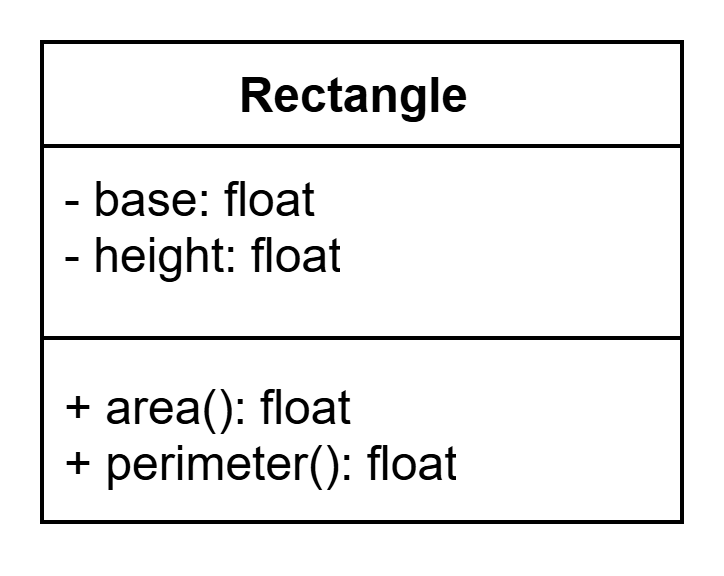

Unit 02: Information Hiding
Abstraction Layer
Building on Unit 1, another fundamental aspect of good object-oriented design is the principle of information hiding and maintaining the abstraction layer.
In Python, there are fewer restrictions are enforced compared to other OOP focused language like Java or C++. This means it's easier to accidentally (or even intentionally) bypass the abstraction layer when working with OOP code - making it your responsibility as a programmer to respect and protect this boundary.
Violating the abstraction layer often leads to a phenomenon known as "spaghetti code" where a codebase becomes so tangled and interdependent that even small changes can break your entire program.

Breaking the Abstraction Layer: Car (Correctness)
To understand what it means to break an abstraction layer, let's us consider the following Car class:
1 2 3 4 5 6 7 8 9 | |
This class model a simple car driving along a 1D road. You can move the car by calling the drive() method, which updates its position by a given distance.
1 2 3 4 5 6 7 8 | |
This is the proper way to use the Car class. We instruct the car to drive, and let the internal logic handles the position update to the car instance.
1 2 3 4 5 6 7 8 | |
Now, instead of tell the car to drive like before, you’re essentially now stepping out of the car and pushing the car manually.
Imagine trying to drive a car, only for someone else to randomly push it from the outside! Likewise, directly changing attributes can often lead to unpredictable or buggy behavior.
Tell, Don’t Ask
This example also breaks the "Tell, Don’t Ask" principle, another core OOP principle which state that we should tell object to do something for us instead of asking for information and doing it ourself.
- ✅ Correct:
car.drive(10)→ You instruct the car itself to move. - ❌ Incorrect:
car.position = car.position + 10→ You ask for the car’s position and change it manually.
Breaking the Abstraction Layer: Rectangle (Maintainability)
Apart from correctnesss, preserving the abstraction layer also makes your code easier to maintain and refactor if you like to make changes to it in the future.
Let’s revisit the Rectangle class from Unit 01:
1 2 3 4 5 6 7 8 9 10 | |
Suppose that you initially calculated area and perimeter by accessing the class fields directly and hence broken the abstraction layer:
1 2 3 4 | |
1 2 3 4 | |
Later on, you might decide to represent a rectangle using its base and area instead of height. After all, only two of the three (base, height, area) are needed to compute the third - making this redesign valid.
1 2 3 4 5 6 7 8 9 10 | |
1 2 3 4 5 6 7 8 9 10 | |
However, if you previously accessed fields directly and broken the abstraction layer, your main program will also break after this internal change to the Rectangle class:
1 2 3 4 | |
Now, the height attribute no longer exists, so these lines now cause errors.
Whereas if the we used the class’s methods (the abstraction layer), your code continues to work even after the internal changes to your class!
1 2 3 4 | |
Underscore _ in Python
To help preserve information hiding, Python provides a naming convention using the underscore (_) prefix to signal that a class attribute or method is meant for internal use only.
While Python doesn't enforce access restrictions like private or protected keywords in other languages (e.g., Java or C++), the underscore acts as a convention that you - as programmers - should respect.
Let’s revise our earlier Car and Rectangle classes to follow this convention:
1 2 3 4 5 6 7 8 9 10 | |
Note that in the class diagram the + (public) sign is also flipped to - to indicate that it is a private/internal field.

1 2 3 4 5 6 7 8 9 | |
Using underscore naming convention
Starting now, ALL of your attribute in your class should be internal by default. You will almost never need to use public attributes.
Discussion
Discussion questions (please discuss this with your teacher!)
- What is the difference between accessing an attribute directly vs using a method? Why might direct access lead to problems in larger programs?
- Consider the principle “Tell, Don’t Ask.” Why might this lead to better object-oriented code?
- How does changing the internal implementation of a class (e.g., switching from height to area in
Rectangle) illustrate the value of abstraction? - Why should we use underscore in attributes and methods?